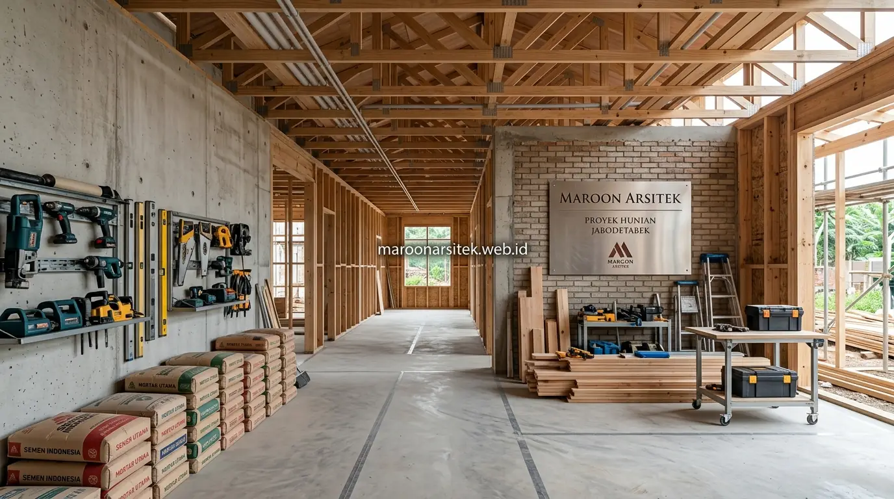

Jasa kontraktor rumah dengan sistem one-stop-solution menangani seluruh tahapan proyek, mulai dari desain, perhitungan anggaran, hingga pelaksanaan konstruksi, dalam satu alur kerja tanpa perlu melibatkan banyak pihak terpisah yang berisiko menimbulkan miskomunikasi. Maroon Arsitek menerapkan sistem ini melalui layanan jasa kontraktor rumah untuk wilayah Jabodetabek agar klien mendapatkan kepastian proses kerja yang jelas dari awal hingga akhir proyek.
Kebingungan memilih kontraktor sering muncul karena banyak penyedia jasa yang hanya menangani sebagian tahapan, sehingga klien harus mengoordinasikan sendiri antara arsitek, kontraktor pelaksana, dan vendor material secara terpisah. Bagian berikut menguraikan bagaimana sistem one-stop-solution menjawab kebutuhan tersebut secara komprehensif.
Integrasi Tahap Desain dan Konstruksi dalam Satu Alur Kerja
Sistem one-stop-solution mengintegrasikan tahap desain dan konstruksi dalam satu alur kerja, sehingga gambar kerja yang dihasilkan tim jasa arsitek langsung menjadi acuan tim konstruksi tanpa risiko perbedaan interpretasi antara kedua tahap tersebut. Integrasi ini menjadi keunggulan utama dibanding menggunakan penyedia jasa desain dan konstruksi secara terpisah.
Komunikasi antara tim desain dan tim pelaksana berjalan internal dalam satu manajemen proyek, sehingga penyesuaian teknis yang diperlukan selama konstruksi dapat dikoordinasikan langsung tanpa proses klarifikasi berlapis antar pihak yang berbeda perusahaan.
Pendekatan ini juga mengurangi risiko tanggung jawab yang saling lempar antara pihak desain dan pihak konstruksi, karena kedua tahap berada di bawah satu manajemen yang sama dan bertanggung jawab penuh atas keseluruhan hasil proyek fisik di lapangan.
Koordinasi Internal yang Mempercepat Penyesuaian Teknis
Kebutuhan penyesuaian teknis yang cepat selama konstruksi dijawab melalui koordinasi internal antara tim desain dan pelaksana, yang dapat mengambil keputusan lebih efisien dibanding proses klarifikasi antar perusahaan yang terpisah.
Kecepatan koordinasi ini membantu menjaga jadwal proyek tetap sesuai rencana, terutama ketika ditemukan kondisi lapangan yang memerlukan penyesuaian desain secara langsung tanpa menunggu proses birokrasi antar pihak eksternal.
Transparansi Anggaran Sejak Tahap Perencanaan hingga Konstruksi
Sistem one-stop-solution menerapkan transparansi anggaran sejak tahap perencanaan desain hingga pelaksanaan konstruksi, sehingga klien mendapatkan gambaran biaya yang konsisten tanpa perubahan signifikan akibat koordinasi yang terputus antar tahapan proyek. Transparansi ini menjadi nilai penting bagi klien yang mengutamakan kepastian anggaran.
Estimasi biaya disusun sejak tahap desain awal, dengan mempertimbangkan spesifikasi material dan kompleksitas konstruksi yang telah direncanakan, sehingga RAB yang dihasilkan mendekati kondisi aktual saat proyek memasuki tahap pelaksanaan.
Setiap perubahan anggaran yang terjadi selama proyek dikomunikasikan secara jelas kepada klien, lengkap dengan alasan teknis yang mendasarinya, sehingga klien selalu memiliki pemahaman penuh atas kondisi keuangan proyek yang sedang berjalan.

Estimasi Biaya yang Konsisten dari Desain hingga Realisasi
Kebutuhan konsistensi anggaran dijawab melalui penyusunan estimasi biaya yang mempertimbangkan spesifikasi teknis sejak tahap desain, sehingga selisih antara estimasi awal dan biaya aktual saat konstruksi dapat ditekan seminimal mungkin.
Konsistensi ini memberikan kepercayaan diri bagi klien dalam merencanakan keuangan proyek, karena estimasi yang diterima sejak awal benar-benar mencerminkan kebutuhan konstruksi yang akan direalisasikan di lapangan. Anda juga dapat membaca panduan biaya bangun rumah per m2 di Jakarta untuk gambaran alokasi dana yang lebih rinci.
Layanan Menjangkau Berbagai Wilayah di Kawasan Jabodetabek
Layanan jasa kontraktor rumah dengan sistem one-stop-solution menjangkau berbagai wilayah di kawasan Jabodetabek, memungkinkan klien di berbagai lokasi mendapatkan standar kerja yang sama tanpa perbedaan kualitas layanan antar area. Jangkauan ini menjadi nilai tambah bagi klien yang berada di luar pusat kota namun tetap membutuhkan standar profesional yang konsisten.
Setiap proyek di berbagai wilayah tetap mengacu pada standar operasional yang sama, mulai dari proses konsultasi, penyusunan RAB, hingga pengawasan konstruksi, sehingga lokasi proyek tidak memengaruhi kualitas layanan yang diterima klien.
Tim lapangan disesuaikan dengan lokasi proyek untuk efisiensi mobilisasi, namun tetap berada di bawah pengawasan manajemen proyek yang sama guna menjaga konsistensi standar kerja di seluruh wilayah layanan, baik untuk pembangunan hunian baru maupun jasa renovasi rumah.
Konsistensi Standar Kerja di Berbagai Lokasi Proyek
Kebutuhan standar layanan yang merata di berbagai wilayah dijawab melalui prosedur kerja yang seragam, diterapkan pada setiap proyek terlepas dari lokasinya, sehingga klien mendapatkan kualitas layanan yang konsisten di mana pun proyek berada.
Konsistensi ini memastikan klien tidak perlu khawatir mendapatkan standar kerja berbeda hanya karena lokasi proyek berada di luar area yang dianggap sebagai pusat operasional utama.